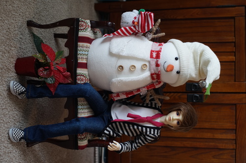
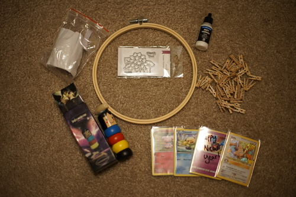
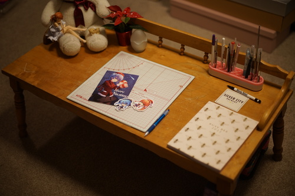
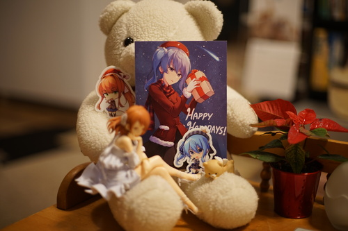

i cant believe christmas is back so soon! its a christmas miracle! my lil christmas present snowman even made it back with us. he wasnt going to make the cut if we ran out of space in the car.
and the chair fits SD sized dolls perfectly! i cant wait to put hina on it (thats a hint, volksusa...)
i honestly love how 2009 Liam looks. i just love this doll so much. hes so fun
new "haul"
im going to make an earring holder because using a tiered plate to hold my earrings takes up too much space, even if it is super cute
i think my mom might like it
we also stopped by the card shop and i got some things! Vallejo matt varnish for hopefully airbrushing sealant and a few cards. they even gave me a sleeve full of celebrations cards for free! it was so sweet! I wasnt able to pull a "eeeeeeeek" so i bought one for me and ryan. this card is too cute. i also bought a lot more 6 cent singles. i keep buying duplicates but its not the end of the world when they cost this much.
vallejo matt varnish is what lomi highly recommends. it makes me nervous to see "100% acrylic resin" on it though. ill try it (and removing it) on a junk faceplate before i use it on anything im worried about.
i found a user on twitter who modified her lieselotte 5th's faceup like i want to. im so doing it now. this girl needs a smile!!!! also please scroll through her photos. she makes some amazingly beautiful dresses for her dolls. way too many pintucks and details and im in love.
ive been looking for a short table to sit at for a couple months now and finally found one i like. its got more than a few water stains but it has railing which i think is very cute! kohime gave me a planner for 2022 which im going to try to write little notes in each day. most days really dont have much to write about but i'll try to come up with something to stay in the habit
I got a lovely card in the mail from maullar! I don't know who the character is but i assume shes a hololive. if anyone knows who she is and is mad i dont know, you can feel free to email me angrily. he sent 2 stickers along too! you dont have to email me all angry like to tell me the other one is monika. i still have to message him and send a thank you!! ill take a better picture first ;3
im gonna be rude for a second but here's my list of things i DONT want for christmas
i have so many of these things (not gift cards) and i dont want to throw them away. just please... dont get me anything if these are the only options. draw me a card and i will appreciate that a lot more. ps gift cards are the dumbest corporate scam ever. there is absolutely nothing personalized or thoughtful about gift cards and cash is always a better option unless youre buying a 10 year old fortnight bucks.